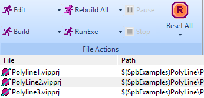
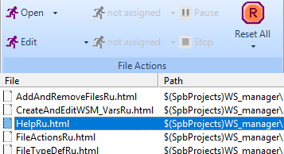

Copyright (c) Prolog Developemnt Center SPb
WorkSpace Manager
Version 2.0
File processing
Files are processed taking into account the settings defined in the Options section:
- setting the file type filter;
- setting variable virtual directories;
- setting operations provided for the files of the respective extensions;
- setting the local processing properties of each specific file.
The management of file processing is performed by means of the control panel of the File Actions section.
The
four processing operations contain the names of operations allowed for
a file marked in the file list of the workspace. If no file is marked
in the file list, then operations have abstract names - operation
numbers.
The following figures show options for naming operations, depending on the type of extension of the marked file.
| VIRPRJ file extension | 
|
| HTML extension | 
|
Each operation has two modes:
- performed on one or several selected (marked) files
- performed for all visible files in the list.
Each operation button has two states and images:
- performing an operation on the selected file(s) - running figure.
- performing operations on all visible files - two running figures and attributed as All, as shown in the case of the Build All operation for a file with the VIPPRJ extension in the figure above.
The last executed operation is saved as a button state, and can be recalled.
If the called operation is not defined for any type of file, then it is ignored.
The operation on each file is completed by changing and displaying the state (the State column in the file list), the number of error warnings when processing files (the Err/Warn column), the date and time of the status change (the Date, Time column)
States are:
- Done - completed successfully;
- Failed - failed;
- Not Found - file not found.
The WorkSpace Manager
application does not contain criteria for success or failure (Done and
Failed) to perform an operation on a file of a particular type, as well
as rules for determining the number of errors and warnings. For each
file type, this must be defined in a special plug-in - file type expert.
When
performing an operation on all files or on several marked files, if the
properties of this file extension indicate that the status of the
previous operation is taken into account, then only those files that do
not have the state Done are
processed. This allows you to process only those files that have not
yet been processed or previously processed with errors.
But the state of any single file or several selected files or all files can be changed (reset) using the Reset Selected or Reset All button.
Reset Selected applies to selected (marked) files.
Reset All applies to all list files.
The first click on the button removes any state other than Done, and the second deletes the state Done. At the same time, the data on errors and dates of processing time are also deleted.
At
the bottom of the application form, the status bar shows the total
number of files processed from among those to be processed, and in
brackets -
D - the number of successfully processed;
F - is the number of unsuccessfully processed;
NF- is the number of files not found.
When performing operations on multiple files, it is possible to pause and then start (Pause/Run) or completely stop processing (Stop).
In this case, since the processing unit is a file, the operation is
suspended (or stopped) after the processing of the current file is
completed.